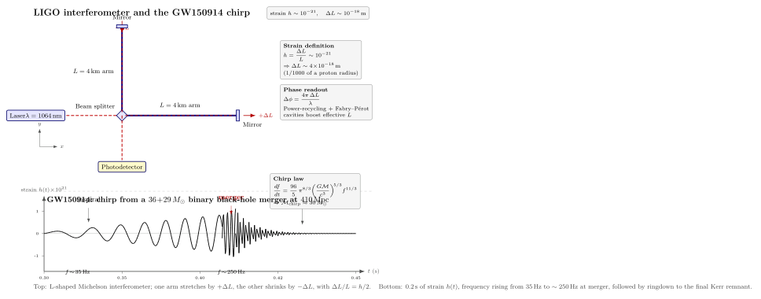

LIGO 怎么测出 $10^{-21}$ 的应变?
上一节我们看到 GR 已经默默成了 GPS 与电网时间的基础设施. 那是引力的"静态"一面: 弱场 + 慢速极限的 Schwarzschild 度规, 给出 $38$ μs/day 的偏置. 这一节我们换到引力的动态一面 — 引力波, GR 与牛顿引力最尖锐的差别之一. 牛顿理论里引力是瞬时的; GR 里时空本身是动力学场, 它能传播波动, 速度恰好是 $c$. 把"远处一对黑洞做螺旋下降"这件事翻译成度规扰动 $h_{\mu\nu}$, 它在远场是个横波, 频率是双黑洞轨道频率的 2 倍, 振幅按 $1/r$ 衰减. 在 $1.3$ 亿光年 (其实是约 13 亿光年, 红移 $z\approx 0.09$, 共动距离 $\approx 410$ Mpc) 之外, 这道波在地球上画出 $h\sim 10^{-21}$ 的应变 — 一个对人类现有探测精度近乎极限的小数字.
我们这一节按四步走: 先把"应变 $h$"这个物理量是什么讲清楚, 把 $10^{-21}$ 翻译成 $\Delta L\sim 10^{-18}$ m 的尺度感; 再讲 Michelson 干涉仪如何用激光相位差去测这个 $\Delta L$; 然后看 chirp 公式怎么直接告诉我们双黑洞的 chirp 质量与距离; 最后讲历史 — 从 Weiss 1972 年的提案到 2015 年的 GW150914 探测, 47 年.
一、应变 $h$ 是什么 — 把 $10^{-21}$ 翻译成长度
第 14 节我们已经把 GR 的弱场极限写成 $g_{\mu\nu}=\eta_{\mu\nu}+h_{\mu\nu}$, $|h_{\mu\nu}|\ll 1$, 然后挑了 transverse-traceless (TT) 规范 $\partial^\mu \bar h_{\mu\nu}=0$, $\bar h^\mu_{\ \mu}=0$, 真空中爱因斯坦方程化为
$$ \Box\,\bar h_{\mu\nu} \;=\; 0, $$
解为传播速度 $c$ 的横波. 一个沿 $z$ 方向传播的"+"偏振平面波, 在 $x\!-\!y$ 平面内的非零分量是 $h_{xx}=-h_{yy}=h_+\cos[\omega(t-z/c)]$. 现在考虑两个相距为 $L$ 的自由测试质量, 静止于 $x$ 轴, 测量它们之间的固有距离
$$ d\ell^2 \;=\; (1+h_+\cos\omega t)\,dx^2. $$
积分到一阶, 测试质量之间的固有距离是 $L\sqrt{1+h_+\cos\omega t}\approx L\,(1+\tfrac12 h_+\cos\omega t)$. 也就是说, 引力波过境时, 一对自由质量的间距按
$$ \frac{\Delta L}{L} \;=\; \frac{1}{2}\,h\,\cos\omega t \tag{1} $$
振荡 — 这就是应变 $h$ 的工程定义. 注意因子 $1/2$: 应变 $h$ 是度规扰动的振幅, 而长度的相对变化只有它的一半. 一个偏振方向上的两条垂直臂, 一臂伸 $+\Delta L$, 另一臂缩 $-\Delta L$, 总臂长差 $\Delta L_x-\Delta L_y\approx hL$.
把 GW150914 的数字代进去. 峰值应变 $h\approx 1.0\times 10^{-21}$, LIGO 单臂长度 $L=4$ km $=4\times 10^3$ m. 一臂的长度变化:
$$ \Delta L \;=\; \tfrac12\,h\,L \;\approx\; \tfrac12\cdot 10^{-21}\cdot 4\times 10^3 \;\approx\; 2\times 10^{-18}\,\text{m}. $$
这个数小到什么程度? 一个质子的电荷半径 $\approx 0.84\times 10^{-15}$ m, 一个原子核 $\sim 10^{-15}$ m. $2\times 10^{-18}$ m 是一个质子直径的千分之二. 把这个对比记住: LIGO 不是在测"很小的距离差", 它是在测比一切实验室物质尺度都更小三个数量级的距离差. 这听起来像是不可能, 我们后面就讲它怎么做到.
顺便讲一下 $h$ 的来源. 远场观察者看到的引力波振幅, 在四极矩近似下是 $h\sim (G/c^4)\ddot Q/r$, 其中 $Q$ 是源的质量四极矩. 对一对相距 $a$、轨道频率 $f_{\rm orb}$ 的双星, $\ddot Q\sim M v^2 \sim M(GM/a)$, $v$ 是轨道速度. 把双黑洞的数字代进去: $M\sim 60\,M_\odot$, 合并前轨道半径 $a\sim r_s\sim 200$ km, $v\sim c/2$, 距离 $r=410$ Mpc $=1.27\times 10^{25}$ m. 估算 $h\sim 10^{-21}$, 与实测吻合. 这是一阶估算 — 完整的 numerical relativity 能在 $10\%$ 内复现波形.
二、Michelson 干涉仪: 用激光相位差测 $10^{-18}$ m
怎么测 $2\times 10^{-18}$ m? 答案是: 把它转化成激光的相位差. LIGO 是一个超大号的 Michelson 干涉仪 — 一束 $\lambda=1064$ nm 的红外激光打在分束器 (beam splitter) 上, 一半光走 $x$ 臂, 一半走 $y$ 臂, 各自跑 $L=4$ km 到远端镜子, 反射回来在分束器处合束. 如果两臂光程相同, 合束处相干相消, 光检测器 (photodetector) 看到暗条纹; 如果有 $\Delta L$ 的差, 它就转化成相位差
$$ \Delta\phi \;=\; \frac{4\pi\,\Delta L}{\lambda} \tag{2} $$
(因子 4 因为光来回跑了两次). 代 $\Delta L=2\times 10^{-18}$ m, $\lambda=1064$ nm, 得 $\Delta\phi\approx 2.4\times 10^{-11}$ rad. 这相位差使探测器从绝对暗变成微弱亮 — 强度变化 $\Delta I/I_0\sim (\Delta\phi)^2/4\sim 10^{-22}$ 量级 (我们偏离暗条纹工作, 让它进入线性区, 实际响应再放大几个量级).
但单纯 4 km 的光程是不够的. LIGO 用了几个工程"放大器":
(a) Fabry-Pérot 腔: 在每个臂里再放两面高反射率镜 (反射率 $99.9994\%$), 让光在臂内来回反射约 $300$ 次, 等效光程从 $4$ km 变成 $\sim 1200$ km, 相位灵敏度提高 $300$ 倍.
(b) 功率回收 (power recycling): 暗端口意味着大部分光从激光源方向回弹, 把这部分光"回收"再注入, 使腔内有效功率从入射的 $\sim 200$ W 提升到 $\sim 750$ kW.
(c) 信号回收 (signal recycling): 在探测器前再加一面镜, 把引力波信号频段的光资源压在最敏感的频带 ($30\!-\!500$ Hz).
(d) 量子真空压缩 (squeezed light): O3 后, LIGO 注入压缩态光, 把高频段的散粒噪声 (shot noise) 压低 $30\%$.
(e) 悬挂系统: 镜子是 $40$ kg 的熔融石英, 被四级钟摆悬吊, 把地震 / 道路 / 树叶之类 $1$ Hz 以下的振动隔绝到 $10^{-19}$ m/$\sqrt{\rm Hz}$ 量级.
(f) 真空: 整个 4 km 真空管道压强 $<10^{-9}$ torr, 比月球表面真空还干净, 避免气体折射率涨落.
把所有这些堆起来, LIGO 在 $\sim 100$ Hz 频段的位移噪声本底是 $\sim 4\times 10^{-20}$ m/$\sqrt{\rm Hz}$, 应变本底 $\sim 10^{-23}/\sqrt{\rm Hz}$. 一个 $0.2$ 秒的信号, 噪声积分带宽 $\sim 5$ Hz, 噪声 $\sim 4.5\times 10^{-23}$ — 比 $h\sim 10^{-21}$ 的信号低约 $20$ 倍. GW150914 的实测信噪比 (matched filter SNR) 是 $24$, 与这个估算一致.

三、Chirp 公式: 从波形读出双黑洞的 chirp 质量
引力波怎么"知道"远处那对双黑洞的质量? 答案是 chirp 公式. 把双星看成牛顿轨道, 通过四极矩公式辐射引力波带走能量, 轨道半径不断收缩 — 这是一个能量自洽方程. 设两星质量 $m_1,m_2$, 轨道频率 $f_{\rm orb}$, 引力波频率 $f=2 f_{\rm orb}$. 经过一番计算 (见 Maggiore 教材 §4.1), 可得
$$ \frac{df}{dt} \;=\; \frac{96}{5}\,\pi^{8/3}\,\left(\frac{G\mathcal{M}_c}{c^3}\right)^{\!5/3}\,f^{11/3}, \tag{3} $$
其中
$$ \mathcal{M}_c \;\equiv\; \frac{(m_1 m_2)^{3/5}}{(m_1+m_2)^{1/5}} $$
叫 chirp 质量. 公式 (3) 是引力波天文学最优雅的关系: 频率扫描的速率 $df/dt$ 与单一组合 $\mathcal M_c^{5/3}$ 成正比. 也就是说, 只要能量出 $f(t)$ 这条曲线, 就能直接读出 $\mathcal M_c$ — 不需要别的信息.
对 GW150914, 把波形上"频率从 $35$ Hz 升到 $150$ Hz 用了 $\sim 0.15$ 秒"代进去, 立刻得到 $\mathcal M_c\approx 30\,M_\odot$. 把 $f$ 与 $df/dt$ 联立解, 加上 ringdown 频率给出 Kerr 残留黑洞的质量, 反推得到 $m_1\approx 36\,M_\odot$, $m_2\approx 29\,M_\odot$, 总质量 $M=65\,M_\odot$, 残留黑洞 $M_f\approx 62\,M_\odot$. 失去的 $\sim 3\,M_\odot$ 全部辐射成引力波 — 总辐射能
$$ E_{\rm GW} \;\approx\; 3\,M_\odot\,c^2 \;\approx\; 5.4\times 10^{47}\,\text{J}, $$
峰值光度 $L_{\rm peak}\approx 3.6\times 10^{49}$ W. 这个数字值得停下来看一会: 可见宇宙所有恒星的总光度大约是 $5\times 10^{49}$ W (假设 $\sim 10^{23}$ 颗恒星, 每颗 $L_\odot=3.8\times 10^{26}$ W); GW150914 在合并前后的 $\sim 0.1$ 秒内, 光度跟整个可观测宇宙的恒星总和差不多. 但这道光度是引力波, 不是电磁辐射, 所以传统天文学完全感受不到 — 只有时空本身在远处轻微抖动.
有了 chirp 质量 $\mathcal M_c$, 还能用波形振幅反推距离. 振幅
$$ h \;\sim\; \frac{4}{r}\,\left(\frac{G\mathcal{M}_c}{c^2}\right)^{\!5/3}\,\left(\frac{\pi f}{c}\right)^{\!2/3}, $$
所以 $r\propto \mathcal M_c^{5/3} f^{2/3}/h$. 代入 GW150914 的 $\mathcal M_c, f, h$, 得 $r\approx 410$ Mpc $\approx 1.3\times 10^9$ 光年. 这是一个standard siren — 引力波本身就告诉你它从多远来的, 不需要标准烛光与红移阶梯. 这一点近年来被用来测 $H_0$, 给宇宙学距离阶梯提供独立检验 (尚未到精度足够的程度, 但方法已经站住).
注意 $\mathcal M_c$ 与总质量 $M=m_1+m_2$ 不同 — 对等质量双星, $\mathcal M_c=2^{-1/5}M\approx 0.87 M$. chirp 质量是引力波第一能直接拿出来的物理量, 总质量与质量比要靠 ringdown 与高阶后牛顿展开才能解开. 这也是为什么 GW150914 的 paper 里第一行写的是 chirp 质量 $\sim 28\,M_\odot$ (源系), 而不是总质量.
四、历史: 从 Weiss 的提案到 Advanced LIGO 第二天
引力波探测的故事要从 1916 年讲起. 爱因斯坦那年首先在他的弱场近似论文里发现 $\bar h_{\mu\nu}$ 满足波动方程, 但对辐射的真实存在他自己反复怀疑过 — 1936 年他还和助手 Rosen 写过一篇标题是"引力波存在吗?" (回答倾向"不存在"), 投到 Physical Review 被审稿人退回, 他大怒拒绝再投 (后来才承认审稿人是对的). 1957 年 Chapel Hill 会议上, Bondi 与 Feynman 用著名的 "sticky bead argument" (假想一根杆上串两个珠子, 引力波过境珠子相对杆运动, 摩擦发热 — 所以引力波能传递能量, 物理上确实存在) 把这个争议永久结束.
实验探测的雏形是 Joseph Weber 1960 年代的共振棒 — 一个 $1.5$ 吨的圆柱铝棒, 谐振频率 $\sim 1660$ Hz, 一旦引力波过境激起棒的振动. Weber 1969 年宣称在双站符合中看到信号, 引发热潮, 但其他实验组从未独立复现, 现在认为是噪声. 这件事的历史副作用: 它让"引力波探测"在 1970 年代背了个不太好的名声, 推动整个领域转向更精密的干涉方案.
Rainer Weiss 1972 年在 MIT 内部一份 "quarterly progress report" 里写下了今天 LIGO 的设计骨架: Michelson 干涉仪 + 激光 + 自由悬挂镜, 详细分析了散粒噪声、热噪声、地震噪声本底, 估算出 km 级臂长可以达到 $h\sim 10^{-21}$. 这份 23 页的内部报告 (NSF 后来叫它"the Weiss report") 是 LIGO 设计的奠基文件.
1980 年代 Caltech 的 Kip Thorne 与 Ronald Drever 推动 NSF 立项, 1990 年 LIGO 项目获批, 1994 年开工. Barry Barish 1994 年从 SSC (超大型超导对撞机) 取消的废墟里走出来接手 LIGO, 把它从一个学院项目改造成 NSF 历史上最大单笔基础研究资助 ($\sim 10$ 亿美元) 的工程项目. 2002 initial LIGO 开机, 在 $h\sim 10^{-21}$ 的目标灵敏度上跑到 2010 年, 什么都没探到. 这件事对外界并不容易解释 — "我们花了 10 亿美元, 没听到任何声音". 正确的回应是: initial LIGO 的目的就是证明这台机器物理可行 + 验证灵敏度路径图, 它做到了.
2010-2015 年, Advanced LIGO 升级: 更大功率的激光 ($\sim 200$ W), 更重的镜子 ($40$ kg), 改进的悬挂系统, 信号回收腔 — 设计灵敏度从 initial 的 $h\sim 10^{-21}$ 提升 10 倍到 $h\sim 10^{-22}$, 探测体积扩大 $1000$ 倍. 2015 年 9 月 12 日 Advanced LIGO 完成最后调试, 9 月 14 日 09:50:45 UTC 首次开始 "engineering run 8" (准正式数据采集), 几个小时后, GW150914 进来. 那是 Advanced LIGO 真正运行的第二天.
信号在 Livingston 站点先到, $6.9$ 毫秒后 Hanford 也看到 — 这个时延与两站点 $3000$ km 距离上引力波以光速传播一致, 对应天空源方向锥, 又与 Virgo 后续重建相符. 实验组在私下分析中怀疑是盲注 (内部演练注入的假信号), 但 9 月底 LIGO 主管确认: 没有人注入. 几周后这个 GW150914 经过 5 个月的内审、波形匹配、噪声反验证, 2016 年 2 月 11 日全球新闻发布, 信号与广义相对论 numerical relativity 模拟波形对照 — 偏离 $<4\%$.
2017 年诺贝尔物理学奖颁给 Weiss / Barish / Thorne, 表彰"对 LIGO 探测器与引力波观测的决定性贡献". 这是 GR 提出 100 年后, 它的最后一个关键预言被直接验证.
到 2024 年, LIGO/Virgo/KAGRA 联合网络已积累 $\sim 90$ 个置信引力波事件, 包括 2017 年的中子星合并 GW170817 (同时被电磁望远镜看到 kilonova, 启动多信使天文学). 引力波天文学已经从"是否存在"过渡到"是常规观测窗口". 下一代 (Einstein Telescope, Cosmic Explorer, 太空 LISA) 计划在 2030 年代把灵敏度再提高 10 倍, 把整个可观测宇宙的双黑洞合并都纳入视野.
小结
这一节我们把第 14 节的引力波解 $\Box\bar h_{\mu\nu}=0$ 推到具体探测器: 应变 $h=\Delta L/(\tfrac12 L)$ 把 $h\sim 10^{-21}$ 的弱场扰动翻译成 $\Delta L\sim 2\times 10^{-18}$ m 的长度变化 — 比质子直径还小千分之一. LIGO 用 4 km L 形 Michelson 干涉仪 + Fabry-Pérot 腔 + 功率回收 + 量子压缩 + 钟摆悬挂 + 超高真空, 把激光相位差 $\Delta\phi=4\pi\Delta L/\lambda\sim 10^{-11}$ rad 测出来. 公式 (1) $\Delta L/L=h/2$ 与公式 (2) $\Delta\phi=4\pi\Delta L/\lambda$ 把"应变"与"相位"连起来; chirp 公式 (3) $df/dt\propto \mathcal M_c^{5/3}f^{11/3}$ 让我们直接从波形 $f(t)$ 反推 chirp 质量. 把 GW150914 的实测 $35\to 250$ Hz / 0.2 秒代进去, 得 $\mathcal M_c\approx 30\,M_\odot$, $m_1+m_2=36+29\,M_\odot$, 距离 $410$ Mpc, 辐射能 $\sim 5\times 10^{47}$ J, 峰值光度 $3.6\times 10^{49}$ W (相当于可观测宇宙所有恒星的总光度). 历史上 Weiss 1972 提案、Drever/Thorne 1980 推动、Barish 1994 工程化、initial LIGO 2002-2010 验证灵敏度路径、Advanced LIGO 2015 升级第二天就探到 GW150914, 2017 年 Nobel 给 Weiss/Barish/Thorne. 下一节我们换一种"看引力"的方式: 不再听波, 而是看光 — EHT 用毫米波 VLBI 阵列拍到 M87* 与 Sgr A* 的"黑洞照片", 那张橙色甜甜圈究竟是什么.
▲